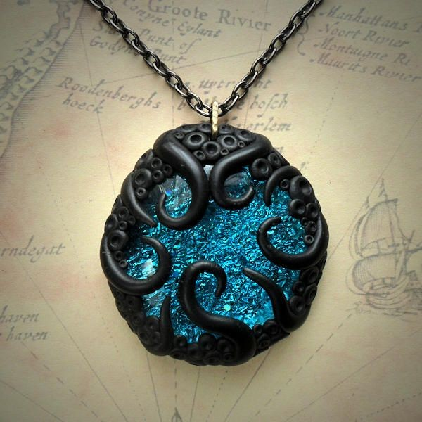
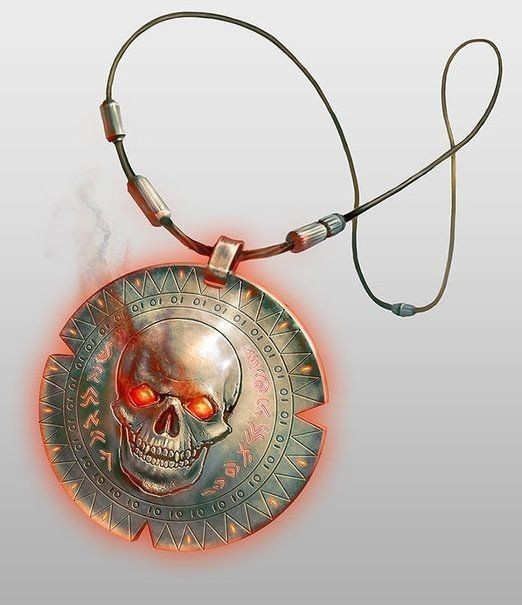
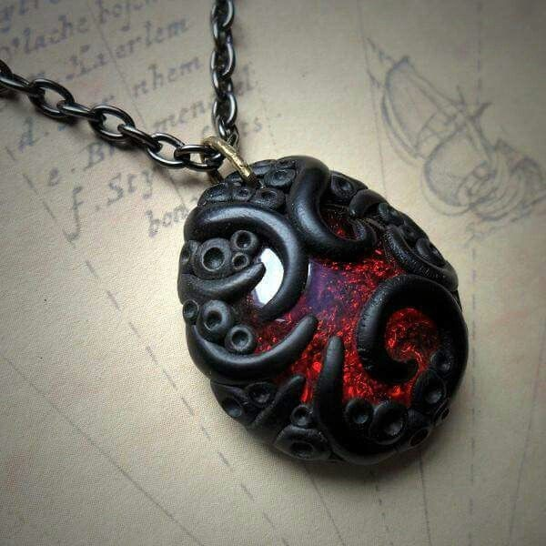
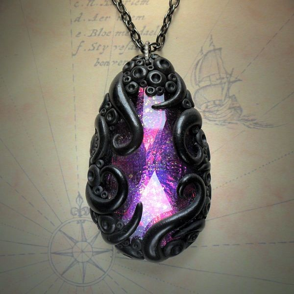
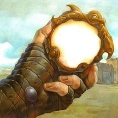
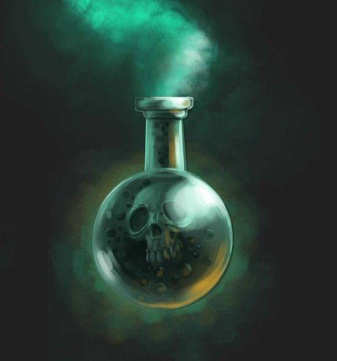
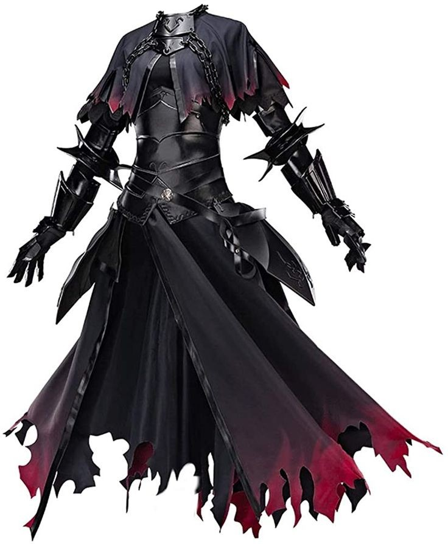
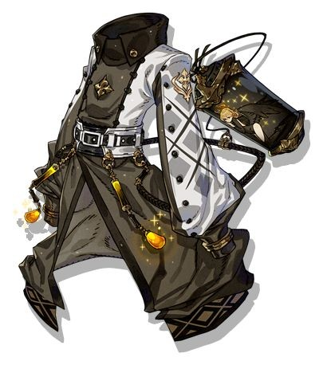
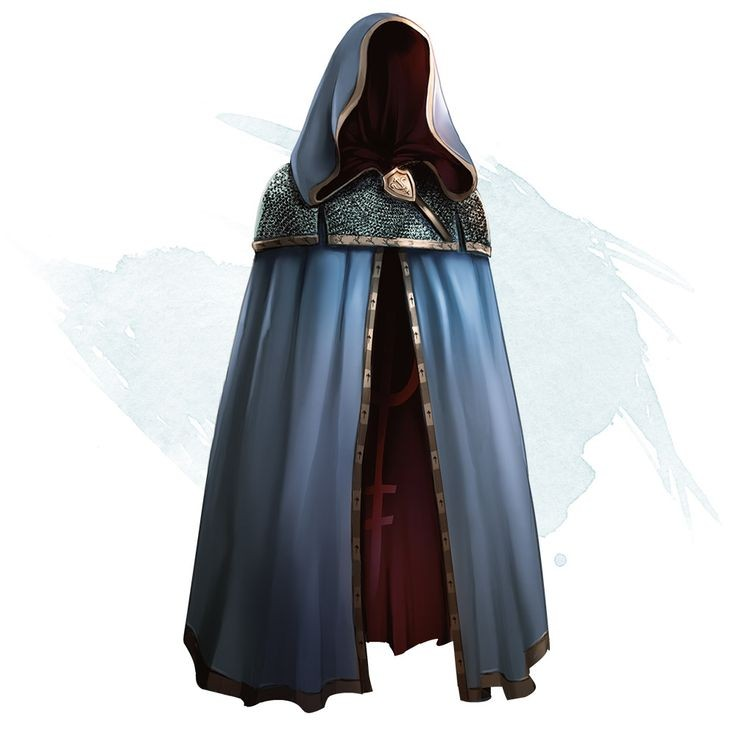
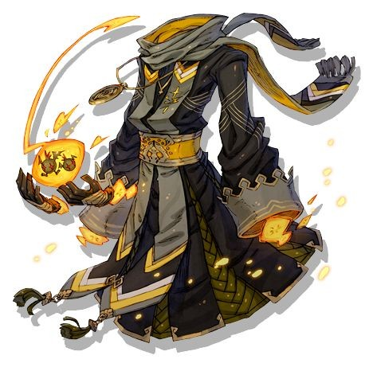

MERCADO NEGRO
Colar de Energia

7 Dracmas
Da ao portador o poder de criar e manipular energia enquanto usa o colar.
Colar de Necromancia

12 Dracmas
Proporciona o poder de reaver a vida de mortos a quem usa esse colar.
Colar de Pirocinesse

10 Dracmas
Poder de criar e manipular as chamas em seu nivel avançado quando esta usando o colar.
Colar de Umbracinesse

8 Dracmas
As sombras se tornam parte do portador desse colar, que poderá manipulalas e crialas a sua vontade.
Espelho de Teleporte

17 Dracmas
Espelho que da a habildiade de teleporte para o usuario, com ele pode ser salvo 1 local para se teleportar para ele depois. (apenas um local por vez pode ser salvo)
Poção de Incorporabilidade

3 Dracmas
Com essa poção, o usuario se torna intangivel, também não podendo tocar no oponente se estiver em combate. (1 truno de uração)
Poção de Aumento de Habilidades

20 Dracmas
Ele proporciona um aumento em suas forças o deixando até mesmo mais disposto em combate. (x40 por 2 turnos)
Vestimenta de Lutadores

4 Dracmas
O usuario desta vestimenta tem suas capacidades fisicas melhoradas (2x em velocidade e força)
Vestimenta de Arcanistas

10 Dracmas
Da ao usuario desta vestimenta a capacidade de manipular magia arcana, se caso este ja o manipulava sua capacidade aumenta por 2x.
Vestimentas de Magias

11 Dracmas
Da ao usuario desta vestimenta a capacidade de manipular magia comum, se caso este ja o manipulava sua capacidade aumenta por 2x.
Vestimentas de Pyromancia

13 Dracmas
Da ao usuario desta vestimenta a capacidade de manipular fogo, se caso este ja o manipulava sua capacidade aumenta por 2x.
Novos itens serão disponibilizados em breve!